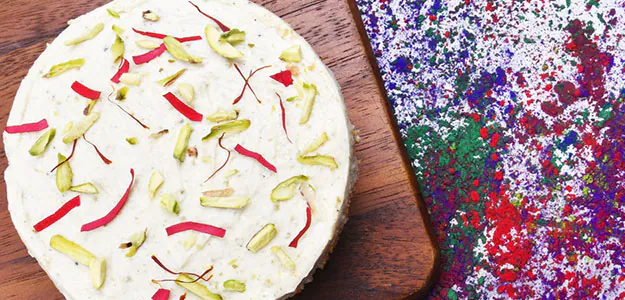

Thandai Cheesecake

Description:
A sugar-free, fusion delight will lighten up your festive swag and get you in the mood for the brightest day. Holi is all about thandai, so enjoy whipping up this delicious twist that is sugar-free and guilt-fre
Ingridents
- 2 Cups Malai from full fat milk
- 2 cups Maida
- 200 gram Powdered sugar
- 1/2 tsp Cardamom powder
- 1/2 cup Nuts of your choice
- 1/2 cup Desiccated Coconut
Steps
- Cook malai on stove along with sugar and desiccated coconut, till it is completely dry. Keep it aside.
- Roast dry fruits in ghee and mix with dry malai.
- Lightly knead flour with ghee. Then knead it properly with water. Put a final coating of ghee on the kneaded dough. Let it rest for some time.
- Roll the dough and cut into equal parts. Roll each part into a small roti. Smear maida slurry on all the sides of the roti.
- Place malai mixture in the centre, and secure the ends to give it the shape of gujiya. Poke a couple of holes in the gujiya with a pin.
- Fry in ghee.